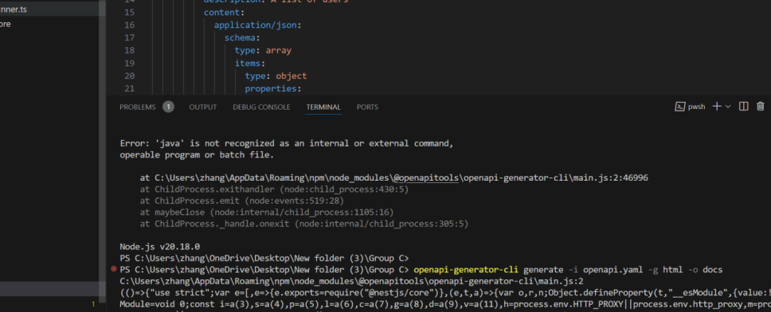

1.YAML
Features: Provides syntax highlighting, formatting, autocomplete, and syntax checking for YAML files. How to install: Type YAML in the search box, find the YAML extension, which is usually provided by Red Hat, and click Install.

In fact, there are a number of tools that can help us create, edit, and manage API documentation when working with the OpenAPI specification, each with its own unique advantages. Swagger Editor is the official OpenAPI editor of choice, offering rich features, support for YAML and JSON formats, and a real-time preview of API documentation, making it ideal for writing and testing APIs. However, we can still work on the downloaded vscode text editor to write OpenAPI documentation. In order to better edit the OpenAPI documentation (whether in YAML or JSON format) in VSCode, it's a good idea to install some relevant extensions.
Here are some of the extensions I recommend installing and how they perform:
Features: Provides syntax highlighting, formatting, autocomplete, and syntax checking for YAML files. How to install: Type YAML in the search box, find the YAML extension, which is usually provided by Red Hat, and click Install.
Features: Dedicated support for OpenAPI documentation, providing features such as syntax checking, autocomplete, document preview, and more. Installation method: Enter OpenAPI in the search box, find the relevant extension, and click Install.
Feature: Allows you to send HTTP requests directly in VSCode and view the response, making it great for interacting and testing with APIs. You can write HTTP requests and run them directly in the editor. Installation method: Enter REST Client in the search box, find the relevant extension, and click Install. Debugging tools: If you run into problems, you can use VSCode's integrated terminal to run some debugging commands, or check out the extension's documentation for more help.
(1) You can follow the steps below to develop openAPI documentation to create and manage:
Using the generated API client code in your React project is a critical step in combining OpenAPI documentation with your front-end application. So I created a new GitHub repository called my-react-app (where I'll integrate the generated API client later):
Create and write the OpenAPI document openapi.yaml:
Code:npm install @openapitools/openapi-generator-cli -g
code： openapi-generator-cli generate -i openapi.yaml -g html -o docs openapi-generator-cli generate -i openapi.yaml -g javascript -o src/api
The error message indicates that the OpenAPI Generator CLI is trying to call Java, but it doesn't appear to be installed on your system, or that Java isn't properly configured in your system's environment variables. The OpenAPI Generator is a Java-based tool, so you need to install the Java runtime to work.
The client code generated by typescript-fetch will use the Fetch API and include TypeScript type declarations.
In the src folder, create a new file UserList.tsx:
Code: npm start

With the above steps, we created a new GitHub repository called and integrated the resulting API client into it. Call the API in the React component and present the list of users, and finally push the project to GitHub.